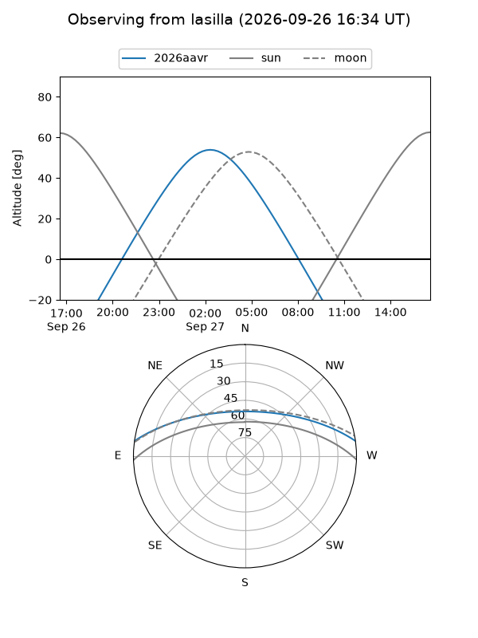
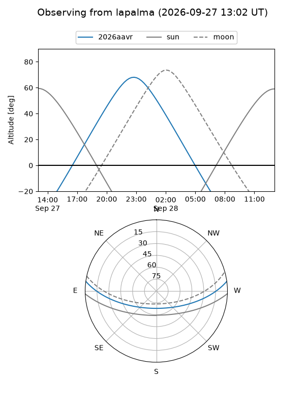
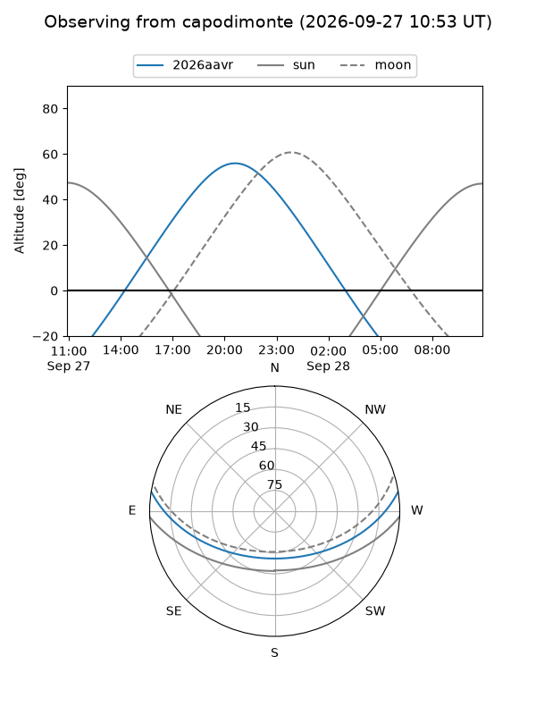
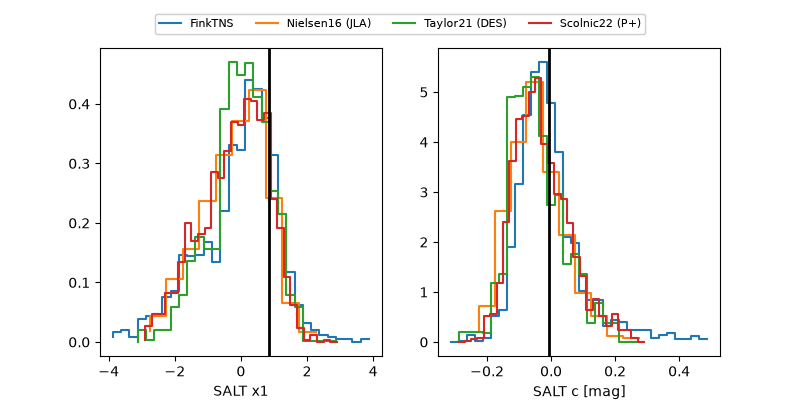

2026aavr
Target 2026aavr at 2026-09-27 11:28
Aliases and brokers:
FINK-ZTF: ztf.fink-portal.org/ZTF26absdxmw
Lasair-ZTF: lasair-ztf.lsst.ac.uk/objects/ZTF26absdxmw
ALeRCE-ZTF: alerce.online/object/ZTF26absdxmw
YSE-PZ: ziggy.ucolick.org/yse/transient_detail/2026aavr
TNS name: wis-tns.org/object/2026aavr
Direct TNS query: direct search
alt names
ZTF26absdxmw (ztf,fink_ztf)
2026aavr (tns,yse)
PS26hpe (panstarrs)
Coordinates:
equatorial (ra, dec) = 329.6749,+6.69152
equatorial (HMS+DMS) = 21:58:41.98,+06:41:29.46
galactic (l, b) = (65.4866,-36.25528)
Flags:
TNS type: nan
peak dt: +15.0
Photometry:
last ztfg=20.17, ztfr=20.10
8 ztfg, 9 ztfr detections
Lightcurve
Visibility



Additional plots
